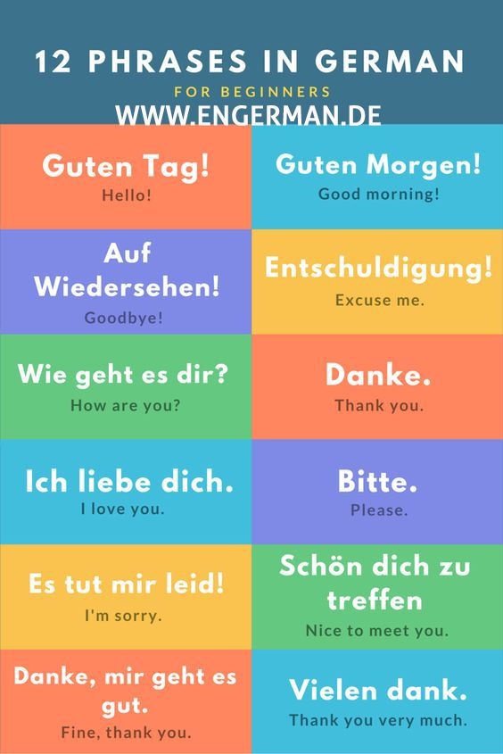

How to Speak German: The Faster Way to Learn German:
Find Your Big Why for Learning German
Even before you think about which materials to study, or your method for learning German , you need to take a step back and understand your underlying reason for wanting to speak German. This is your Big Why. My “Big Why” is an unquantifiable passion for languages. It isn’t something measurable like “So I can speak to X number of people in the world”, but it has to do with enriching my life with friendships and experiences, which you can’t really measure.
Here are some reasons for learning German that could be your Big Why:
- To have conversations with German speaking family members
- To find a job in a German company (Germany is one of the biggest economies in the world)
- To speak with natives as you travel in the heart of Europe
- To read the classics of German literature (think Johann Wolfgang von Goethe, Herman Hesse and Franz Kafka)
- To get an inside view of German culture
Create a Mini-Germany in Your Home
You don’t need to live in Germany to immerse yourself in the German language. There are many ways to plunge yourself headfirst into German wherever you live. Here are a few of my top ways to bring Germany to your hometown:
- Make Your Computer Multilingual. Why not turn your computer into a German-only system?
- Find the German Speakers in Your City. Believe it or not, there are many communities of German speakers around the world. You may be near one and not even realize it!
- Watch German Television and Movies. Force yourself to focus by watching without subtitles.
Use Language Hacks to Learn German Fast
Language hacks are shortcuts that help you learn a language faster. Here are a few of my favourite language hacks that can help you learn German fast:
- Use Spaced Repetition Systems (SRS). SRS is a great method for memorizing vocabulary and phrases. It is probably the most effective hack you can use to pick up new vocabulary.
- Use Mnemonics. Mnemonics help you create associations to easily recall German words. The key to mnemonics? Use your imagination.
- Focus Your Study with the Pomodoro Technique. This technique allows you to break up your study sessions into smaller chunks of time resulting in better focus and a more effective learning experience.
Use Conversational Connectors – How Beginners Can Get their Flow
- Like most languages, German uses a set of call and response phrases that I call conversational connectors. These are crucial to everyday conversations, but they aren’t usually found in phrasebooks.
- When my friend Anthony Lauder introduced me to conversational connectors a few years ago, they blew my mind. They’re a great technique for sounding more like a native speaker, for removing the awkwardness from conversations, and for giving yourself time to recall vocabularly.
- Here’s an example of how they work. When someone asks you “How is your hotel room?” instead of answering with “um … good” , which pretty much ends things right on the spot, you might add in phrases and expressions to create a more organic feel to what you are saying. You could say: “To tell the truth, that is a good question. The hotel room is good. Thanks for asking. How is your hotel room?” . This is exactly the same answer with conversational connectors added in.
- Conversational connectors are extremely helpful because you can use them in a variety of situations such as agreeing with someone, sharing your opinion, or changing the subject.